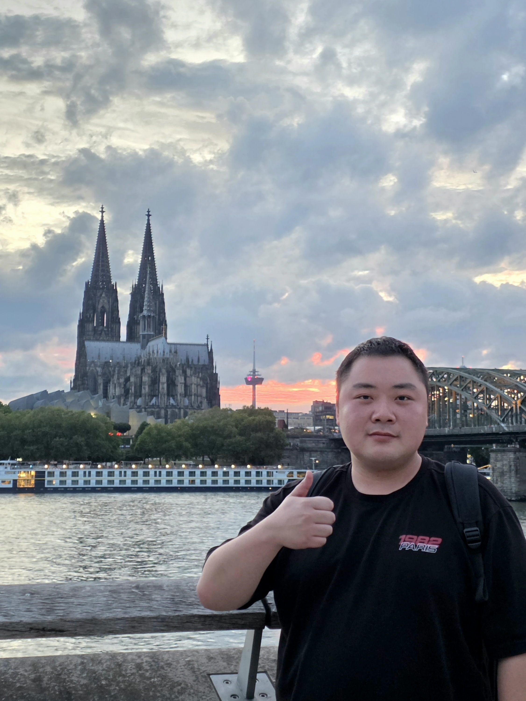

Probability theory and random matrices
Spectral behavior and probabilistic structure in large random systems.
Ph.D. student, Department of Mathematical Sciences at KAIST
Thank you for visiting my website.
I am a Ph.D. student in the Department of Mathematical Sciences at the Korea Advanced Institute of Science and Technology (KAIST), supervised by Prof. Ji Oon Lee.
Email: yoochan.han@kaist.ac.kr
yoochan(dot)han(at)kaist(dot)ac(dot)kr
Office: Room 3418, Natural Science Building (E6-1)
Department of Mathematical Sciences, KAIST
291 Daehak-ro, Yuseong-gu, Daejeon 34141, Republic of Korea

Spectral behavior and probabilistic structure in large random systems.
Spectral properties, community detection, and inference in random graphs.
Free-energy fluctuations, spiked matrix models, and related statistical problems.
with Hyunsuk Choo and Ji Oon Lee, 2026.
with Ji Oon Lee and Wooseok Yang. Random Matrices: Theory and Applications, 2025.
KIAS, Seoul, Korea · 08/10–08/14/2026
Seoul, Korea · 07/07–07/09/2026
Seoul, Korea · 06/22–06/25/2026
Busan, Korea · 02/04–02/06/2026
Jeonju, Korea · 01/18–01/22/2026
Seoul, Korea · 10/22–10/24/2025
Kyoto University, Kyoto, Japan · 09/08–09/12/2025
ZiF, Bielefeld, Germany · 08/25–09/06/2025
Kyungpook National University, Daegu, Korea · 08/12–08/14/2025
Sokcho, Korea · 06/22–06/26/2025
KAIST, Daejeon, Korea · 04/24–04/26/2025
Jeongseon, Korea · 01/19–01/22/2025
Sungkyunkwan University, Suwon, Korea · 10/24–10/26/2024
University of Michigan, Ann Arbor, USA · 06/17–06/28/2024
Jeju, Korea · 05/06–05/10/2024
KAIST, Daejeon, Korea · 04/18–04/20/2024
Seoul National University, Seoul, Korea · 10/26–10/28/2023
Busan, Korea · 06/21–06/23/2023
UC Berkeley, Berkeley, USA
Ph.D. student in Mathematics, Korea Advanced Institute of Science and Technology (KAIST)
Advisor: Prof. Ji Oon Lee
M.S. in Mathematics, Korea Advanced Institute of Science and Technology (KAIST)
Advisor: Prof. Ji Oon Lee
B.S. in Mathematics, Korea Advanced Institute of Science and Technology (KAIST)
KAIST Support Scholarship
KAIST Presidential Fellowship (KPF)
National Science & Technology Scholarship
Teaching Assistant, Department of Mathematical Sciences, KAIST
Excellent Teaching Assistant, KAIST
Excellent Presentation Award, 2026 SAARC Closing Workshop